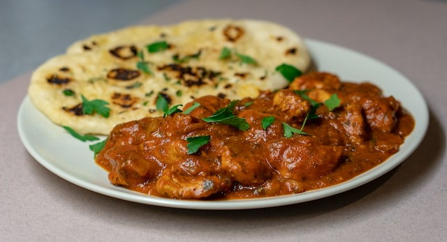

Chicken Masala

I enjoy Indian cuisine but can be very expensive especially if you enjoy it as much as I do. Recently, I learnt to recreate this wonderful dish. Chicken Masala is a flavorful dish that your family will enjoy.
What is Chicken Masala?
Chicken Masala is an indian dish made with chicken that has been marinated in yogurt mixed with different type of spices. It simmers in a rich, creamy tomato-based spiced sauce. Sometimes, it can be mistaken for Butter Chicken. However, Butter Chicken is cooked mainly with butter (hence the name) and a creamy blend of spiced tomato sauce.
What can I serve with Chicken Masala?
I always serve this dish over basmati rice with freshly chopped cilantro and a side of homemade Naan bread to soak up the sauce. Yummy! If you are lazy like me, I usually order the naan bread to save some time. So let's get into the ingredients that you need for this recipe.
Ingredients for the Marinade
- 1 1/2 pounds skinless, boneless chicken thighs
- 1 tablespoon olive oil
- 2 teaspoons kosher salt
- 2 teaspoons garam masala
- 2 teaspoons ground cumin
- 1 teaspoon ground coriander
- 1 teaspoon smoked paprika
- 1 teaspoon ground turmeric
- 1/2 teaspoon ground black pepper
- 1/2 teaspoon red chili powder
- 1/2 teaspoon ground cardamom
- 1 cup plain yogurt or Greek yogurt
- 2 teaspoons grated fresh ginger
- 2 teaspoons finely minced garlic
Chicken Masala Sauce
- 1 large chopped onion
- 1/4 cup tomato paste
- 4 cloves garlic, finely grated
- 1 tablespoon finely grated ginger, or more to taste
- 1 cup crushed tomatoes
- 1 cup heavy cream
- 1/2 cup chicken broth, or as needed
- 2 tablespoons chopped fresh cilantro
- 1/2 teaspoon red pepper flakes
- salt and ground black pepper to taste
- 2 tablespoons clarified butter (ghee) or more as needed
- 2 tablespoons olive oil
How to Make Chicken Masala?
- In a large bowl, mix together all the ingredients for the marinade. Add chicken and toss to coat. Let chicken marinate for an hour or longer if time permits.
- Warm oil and clarified butter in a large skillet over medium-high heat. Once the oil is hot, cook chicken thighs in hot butter until browned on all sides. Transfer chicken onto a plate. When cool enough, cut chicken in bite size pieces.
- Make the sauce: Stir onion into the skillet and saute until translucent (5 minutes). Stir in tomato paste, crushed tomatoes, garlic, ginger, heavy cream, chicken broth, red pepper flakes, salt and pepper. Let it simmer for 20 minutes on medium-low heat.
- Stir in chicken. Add cilantro and red pepper flakes. Continue to cook for another 20 minutes until your chicken is tender.
- Serve over cooked basmati rice with Naan bread and garnish with freshly chopped cilantro.